我们常常想知道变量之间是否存在关联，以及这些关联是否收到其他变量影响。可视化能够帮助我们非常直观的展示这些。
1 | import numpy as np |
| total_bill | tip | sex | smoker | day | time | size | |
|---|---|---|---|---|---|---|---|
| 0 | 16.99 | 1.01 | Female | No | Sun | Dinner | 2 |
| 1 | 10.34 | 1.66 | Male | No | Sun | Dinner | 3 |
| 2 | 21.01 | 3.50 | Male | No | Sun | Dinner | 3 |
| 3 | 23.68 | 3.31 | Male | No | Sun | Dinner | 2 |
| 4 | 24.59 | 3.61 | Female | No | Sun | Dinner | 4 |
relplot
这是一个seaborn新的图形级函数，通过kind参数，能对scatterplot()和lineplot()两个轴级函数进行访问。
seaborn.relplot(x=None, y=None, hue=None, size=None, style=None, data=None, row=None, col=None, col_wrap=None, row_order=None, col_order=None, palette=None, hue_order=None, hue_norm=None, sizes=None, size_order=None, size_norm=None, markers=None, dashes=None, style_order=None, legend=’brief’, kind=’scatter’, height=5, aspect=1, facet_kws=None, **kwargs)
- [hue,size,style]: 可以生成不同的颜色，大小，样式来独立的显示第三个变量
- [row,col]: 按照某个变量分列或者分行
- col_wrap: int, 分成几列（不能与参数row共同出现）
- sizes: 对size参数的每个分类设定大小
- 大小值列表
- 变量到大小的字典映射
- 包含最大最小的元组,会在此范围对值归一化
- [col,row,size,hue,style]_order: 指定变量出现的顺序。
- hue_norm: 当hue的变量值数字时，用于将colormap标准化，如果是分类变量则无关。
- size_norm: 数据单元的标准化，当size变量为数字时缩放图像
- legend: 如何绘制图例
- False：不绘制图例
- ‘brief’(默认)：数值型的hue和size参数会用均匀间隔的样本表示
- ‘full’：对比‘brief’,每个组都会在图例中输出一个条目
- facet_kws: 要传递给FacetGrid其他参数的字典
散点图
1 | sns.relplot(x="total_bill", y="tip", data=tips, |
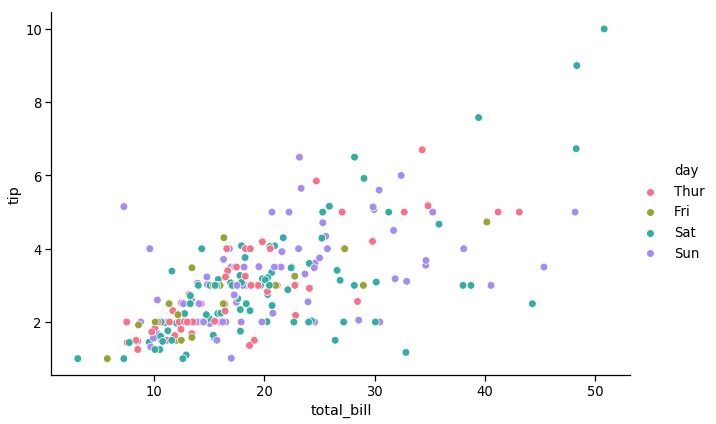
可以看到，小费与消费总体呈线性正相关，那精确到不同日期，有什么不同么？上图颜色虽有区分但是不够明显，
seaborn可以将分类变量分别绘制到不同的子图中，如下图所示：
1 | sns.relplot(x="total_bill", y="tip", data=tips, |
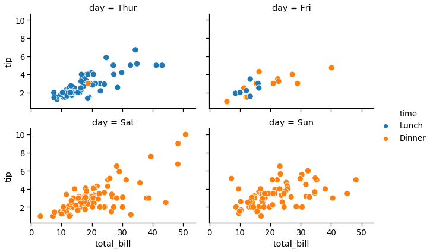
当然，也可以用大小来展示变量的大小强弱等
1 | sns.relplot(x="total_bill", y="tip", data=tips, |
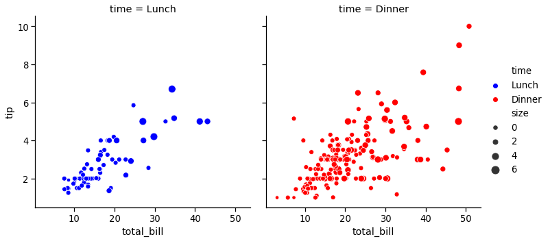
当然也可以将点设置成不同的形状来区分类别，但是不建议单独将一个变量与形状表示，因为形状的区分不是很明显，建议和颜色一同使用。
1 | sns.relplot(x='total_bill',y='tip',data=tips, |
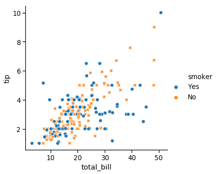
颜色既可以展示离散变量，也可以展示连续变量，还可以对调色盘自定义
1 | sns.relplot(x='total_bill',y='tip',data=tips, |
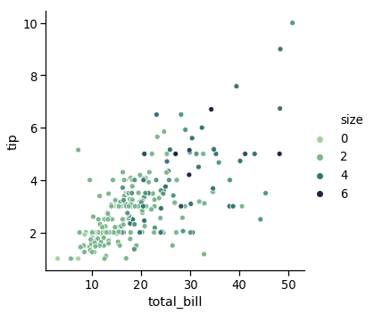
线图
用relpot绘制线图其实是对lineplot()函数的访问，所以lineplot的所有参数都可以用在这里面。同样的，scatterplot()函数的参数设置与此几乎相同。
seaborn.lineplot(x=None, y=None, hue=None, size=None, style=None, data=None, palette=None, hue_order=None, hue_norm=None, sizes=None, size_order=None, size_norm=None, dashes=True, markers=None, style_order=None, units=None, estimator=’mean’, ci=95, n_boot=1000, sort=True, err_style=’band’, err_kws=None, legend=’brief’, ax=None, **kwargs)
- units: 对变量的每个采样单独绘制，但不会绘制图例。可用于绘制重复数据。
- estimator：pandas方法的名称或None,对同一x变量的多个观察值进行聚合的方法。
- ci: [int,’sd’,None],置信区间的大小，当为‘sd’时绘制数据的标准差。
- n_boot: int, 计算置信区间的bootstrap数
- sort: bool, 数据将按照x和y变量排序，否则将按照他们在数据集中的顺序排列点
- err_style: “band”和”bars”,置信区间风格
1 | fmri = sns.load_dataset("fmri") |
subject timepoint event region signal
0 s13 18 stim parietal -0.017552
1 s5 14 stim parietal -0.080883
2 s12 18 stim parietal -0.081033
3 s11 18 stim parietal -0.046134
4 s10 18 stim parietal -0.037970
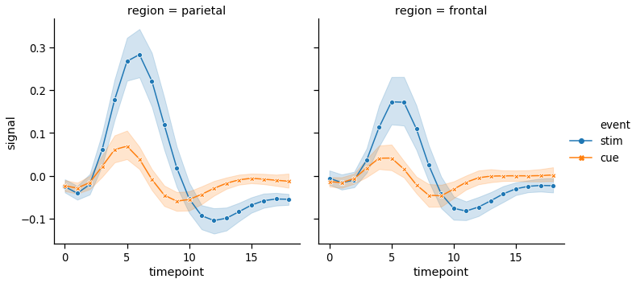
lineplot()在默认情况下会将x按照数值进行排序，也可以禁止。- 对于某些复杂的数据集，例如上面的fmri数据集。同一个x会有多个测量值。seaborn的默认行为是通过绘制平均值和平均值周围的95%置信区间来聚合每个x的多个测量值。对于大型数据绘制置信区间可能会用较长时间，所以可以通过
ci=None来禁止。当然也可以将置信区间替换成标准差ci="sd"
1 | sns.relplot(x="timepoint", y="signal", |
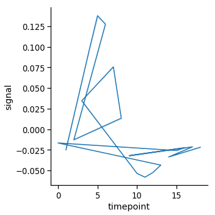
要完全关闭聚合，可以这么设置estimator=None，不过当数据在每个点有多个观察值时，可能会产生奇怪的效果
1 | sns.relplot(x="timepoint", y="signal", estimator=None, kind="line", data=fmri) |
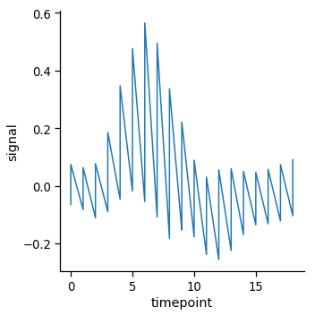
有时候我们需要对同一个问题做重复测量并比较。那么seaborn也可以单独绘制
1 | sns.relplot(x="timepoint", y="signal", hue="region", |
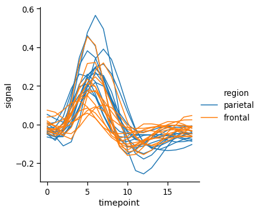
线图通常用于可视化与实际日期和时间相关的数据。这些函数将原始格式的数据传递给底层matplotlib函数，因此它们可以利用matplotlib在刻度标签中格式化日期的能力。但是所有的格式化都必须在matplotlib层进行，您可以参考matplotlib文档来了解它是如何工作的：
1 | fig = plt.figure(figsize=(8,6)) |
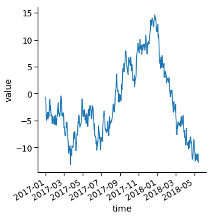
如果要检查变量多个分类的效果，最好将它放在列上分类。
1 | sns.relplot(x="timepoint", y="signal", hue="event", style="event", |
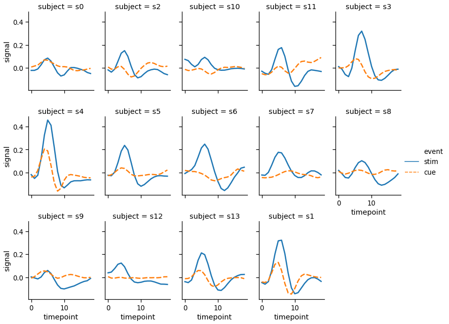
下篇文章，我们讨论seaborn中的线性关系可视化